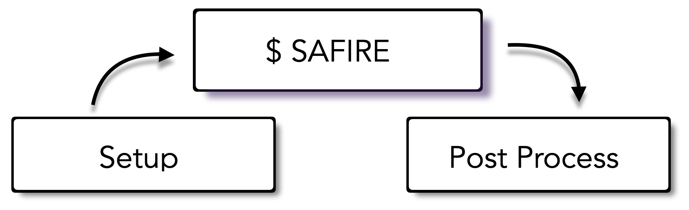
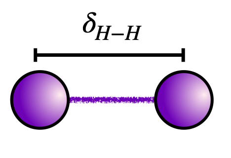

Download this notebook (.ipynb + data files)
3. Writing a Hamiltonian File#
Goal: Become acquainted with how to write a Hamiltonian to the SAFIRE HDF5 format.
3.1. What You Will Learn#
How to write a Hamiltonian to the SAFIRE HDF5 format starting from one-body, and two-body integrals
How to convert from an FCIDUMP file to the SAFIRE HDF5 format
(For convenience) How to use PySCF and safiretools to generate and write the Hamiltonian
3.2. Introduction#
In previous tutorials, we learned how to run SAFIRE, and how to post process the results to arrive at the AFQMC energy. Now, we will learn how to write a Hamiltonian in SAFIRE’s HDF5 format.

In this tutorial, we will compute the ground state energy of the minimal basis hydrogen dimer with a bond length of 1.4 Bohr radii.

Run the following code block to setup the tutorial.
# create scratch directory in notebook path
%mkdir -p {_dh[0]}/data
%cd -q {_dh[0]}/data
3.3. Setting Up#
As we have seen in previous tutorials, the SAFIRE executable is implemented for generic second quantized Hamiltonians, and wavefunctions. Before we can run an AFQMC calculation, we must generate:
A Hamiltonian
A trial wavefunction
A JSON job file
Implicit in items 1. and 2. is the need for an orthonormal basis in which to compute matrix elements of the Hamiltonian, and to represent the trial wavefunction in terms of.
In this tutorial, we will use the set of canonical Hartree-Fock orbitals from RHF as a basis.
3.4. The Hamiltonian#
We are often interested in the electronic ground state of the Born-Oppenheimer Hamiltonian, which is given in first quantization by
AFQMC is formulated in terms of the second quantized Hamiltonian. In second quantization, we express the Hamiltonian in terms of electronic creation/annihilation operators \(\hat{c}^\dagger_{p\sigma}\)/\(\hat{c}_{p\sigma}\), which create/annihilate an electron with spin \(\sigma\) in the orbital \(\phi_p(\vec{r})\) of the chosen basis set \(\{ \phi_p(\vec{r})\}\). The Hamiltonian takes the form (see Hamiltonian Files)
Typically, an external quantum chemistry code will be used to generate integrals. For this tutorial, we will use the minimal basis Hydrogen dimer since it can be easily written down by hand. See, for example, section 3.5.2 in ref. 1.
The code block below contains the Hamiltonian for the \(H_2\) molecule at a bond length of \(\delta_\mathrm{H-H} = 1.4\) Bohr radii in a standard STO-3G basis. Run the code block below to load the Hamiltonian into memory
Szabo, A., & Ostlund, N. S. (1996). Modern quantum chemistry: Introduction to advanced electronic structure theory. Dover Publications.
import numpy as np
number_of_electrons = (1,1) # up, down
number_of_orbitals = 2
# all energy units are Ha
# nuclear repulsion energy E_0
E0 = 0.714285714285714
# one-body integrals h_pq in the basis of canonical RHF orbitals
h = np.array([[-1.25279706e+00, 0.0 ],
[ 0.0 , -4.75602313e-01]])
# Coulomb integrals in the basis of canonical RHF orbitals,
# in chemists' notation: eri[p,r,q,s] = (pr|qs) = v_pqrs
eri = np.zeros((2,2,2,2))
eri[0,0,:,:] = np.array([[ 6.74976525e-01, 0.0],
[0.0, 6.63461552e-01]])
eri[0,1,:,:] = np.array([[ 0.0, 1.81606342e-01],
[ 1.81606342e-01, 0.0]])
# equivalent by symmetry
eri[1,0,:,:] = eri[0,1,:,:]
eri[1,1,:,:] = np.array([[6.63461552e-01, 0.0],
[0.0, 6.96162129e-01]])
# For reference, the RHF orbitals in the STO-3G basis are
# phi_p(r) = sum_mu C[mu,p] g_mu(r)
phi_hf = np.array([[ 0.54893404, 1.21146407],
[ 0.54893404, -1.21146407]])
# and the STO-3G overlap matrix at a bond length of 1.4 Bohr is
# S[mu,nu] = <g_mu | g_nu>
S = np.array([[1., 0.65931821],
[0.65931821, 1. ]])
3.4.1. Build the Hamiltonian#
safiretools provides Hamiltonian classes that write_jobfile writes into an HDF5 file that can be read by the SAFIRE executable.
AFQMC uses a factorized form of the electron-electron interaction tensor,
Any decomposition of this form can be used in AFQMC. Density-fitting integrals, for example, can be written in this form. A typical strategy in the AFQMC literature is to perform a Cholesky decomposition of the super-matrix \(V_{(pr),(sq)}\) using a Cholesky tolerance of \(\delta_\mathrm{Chol}\), where a smaller value of \(\delta_\mathrm{Chol}\) produces a more accurate representation.
The Cholesky decomposition is automatically performed within
MolecularHamiltonian.from_integrals() if you provide it with the electron Coulomb
interaction tensor via the eri argument, with \(\delta_\mathrm{Chol}\) set by cholesky_tol.
Alternatively, 3-index integrals (from density fitting, for example) can be provided via the chol argument to use
directly with no further modifications.
Run the following code block to build the Hamiltonian.
from safiretools import MolecularHamiltonian
hamiltonian = MolecularHamiltonian.from_integrals(
hcore=h,
eri=eri,
enuc=E0
)
3.5. The Trial Wavefunction#
We will explore how to write trial wavefunctions in Writing a Trial Wavefunction. For now, simply run the following code to manually create an RHF wavefunction in the given molecular orbital basis.
from safiretools import Wavefunction
from safiretools import write_jobfile
# RHF orbitals represented in the basis of RHF orbitals
orbitals = np.eye(number_of_orbitals)
# closed shell: both spins occupy the lowest number_of_electrons[0] orbitals
wavefunction = Wavefunction.from_single_determinant(orbitals[:, :number_of_electrons[0]])
# write_jobfile also writes the wavefunction and the Hamiltonian to HDF5 files next to the job file
write_jobfile("afqmc.json", {
"execute": {
"wavefunction": wavefunction,
"hamiltonian": hamiltonian,
"timestep": 0.005,
"steps": 20000,
"equilibration_steps": 200,
"num_walkers": 200
}
})
3.6. Your Turn: Compute the AFQMC Energy#
At this point, you should run an AFQMC calculation using SAFIRE as we covered earlier in Hello SAFIRE,
and use safiretools to obtain the AFQMC energy.
!mpirun -n 16 $AFQMC_EXEC afqmc.json
import matplotlib.pyplot as plt
from safiretools import Results
from safiretools import vis
# FCI energy for the STO-3G integrals above
E_exact = -1.1369935173864893
results = Results("afqmc.results.h5")
vis.plot_timeseries(results)
plt.axhline(E_exact, color="crimson")
E, E_err = results.average("Energy")
print(f"E - E_exact = {E.real-E_exact} ± {E_err.real}")
3.6.1. Check Your Result#
Your AFQMC energy should agree with -1.137024 ± 0.000195 Ha to within 3 \(\sigma\).
For comparison, the FCI energy in the STO-3G basis set used here is -1.1369935173864893 Ha.
Our AFQMC result agrees with FCI to within 0.00003(20) Ha, which is well within chemical accuracy.
3.7. Starting from an FCIDUMP#
safiretools provides tools to convert from a Hamiltonian in a standard
FCIDUMP file to the format used by SAFIRE.
We will continue with the example of a Hydrogen dimer in an STO-3G basis to demonstrate the tooling.
Instructions for generating an FCIDUMP are beyond the scope of this tutorial; however, quantum chemistry codes that can easily generate FCIDUMP files are ubiquitous.
For simplicity, we provide an FCIDUMP file files/H2_FCIDUMP.
safiretools provides safiretools.MolecularHamiltonian.from_fcidump() to read these files.
It builds a Hamiltonian from an FCIDUMP file, which can be passed to write_jobfile just like the one above.
from_fcidump() reads the one-body, two-body and constant terms from the file, along with
the number of electrons in its header, and Cholesky-decomposes the two-electron integrals
to the accuracy asked for by cholesky_tol — the same decomposition
MolecularHamiltonian.from_integrals() performs for an eri tensor above.
3.7.1. Your Turn: Run the Following Code Block to Read the Provided FCIDUMP File#
hamiltonian = MolecularHamiltonian.from_fcidump(
"../files/H2_FCIDUMP",
cholesky_tol=1.0e-5
)
3.8. Generate the Hamiltonian Using PySCF and safiretools#
Instead of defining the Hamiltonian and the wavefunction from scratch, one can also utilize PySCF to obtain the Hamiltonian in a given basis (in this case, the molecular orbital basis) and the trial wavefunction.
Here, we use PySCF to run RHF for the hydrogen dimer, then hand the SCF object to safiretools to obtain the Hamiltonian and the trial wavefunction.
After this, you may follow the same steps as above to run AFQMC.
For more information, see safiretools.MolecularHamiltonian.from_pyscf().
from pyscf import gto, scf
# build the H2 dimer
xyz = "H 0. 0. 0.; H 0. 0. 1.4"
mol = gto.Mole(unit = "Bohr",
atom = xyz,
precision = 1e-6,
basis = "sto-3g")
mol.build()
# run RHF
mf = scf.RHF(mol)
mf.kernel()
hamiltonian = MolecularHamiltonian.from_pyscf(
mf,
chol_cut=1e-6,
)
wavefunction = Wavefunction.from_pyscf(mf)
3.9. Summary#
In this tutorial, you set up and ran a quantum chemistry AFQMC calculation in which we computed the ground state energy of the Hydrogen dimer at a fixed bond length.
The AFQMC code needs a Hamiltonian, a trial wavefunction, and a JSON job file containing the settings as input, and it outputs stochastic samples as specified in the job file.
3.9.1. What You Learned#
How to write a Hamiltonian to the SAFIRE HDF5 format starting from one-body, and two-body integrals
How to convert from an FCIDUMP file to the SAFIRE HDF5 format
How to use PySCF and safiretools to generate and write the Hamiltonian